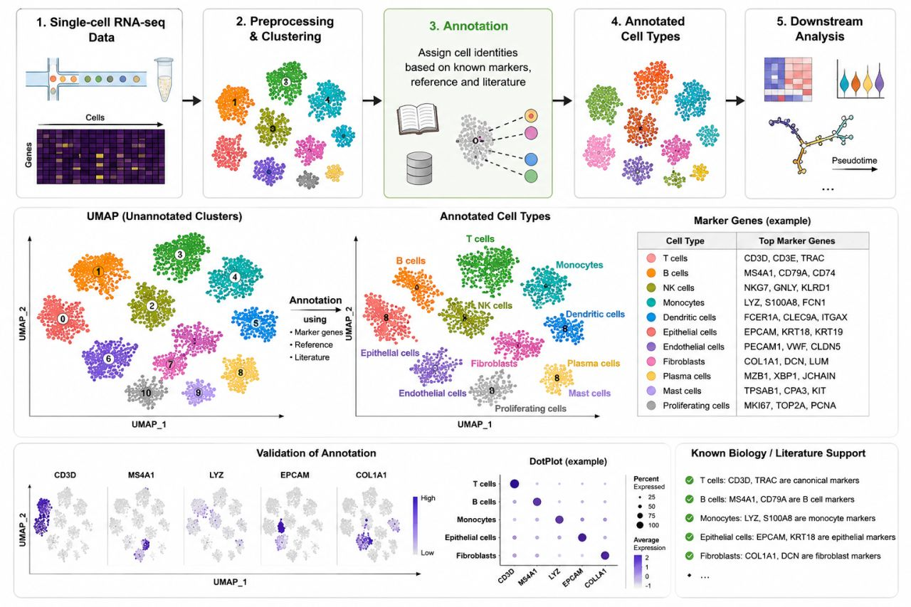

I've analyzed a lot of single-cell datasets, collaborated on numerous projects, and accumulated hundreds of single-cell objects over the years. If you ask me: "What is the hardest part of single-cell data analysis?" My answer would be simple: Annotation.
Clustering, integration, trajectory analysis, differential expression, visualization — these are all important. But none of them matter if your cell type annotations are not robust and biologically meaningful.
A well-annotated dataset becomes a reliable foundation for discovery. A poorly annotated one can lead to misleading conclusions, no matter how sophisticated the downstream analyses are.
I've learned that annotation is where computational analysis meets biological understanding. It requires more than marker genes and reference datasets — it demands critical thinking, literature review, and sometimes a healthy amount of skepticism.
As long as you're confident in your annotations, everything else becomes a matter of refinement and detail.
In single-cell analysis, annotation isn't just another step in the workflow. It's the step that determines whether your results tell the right story.
View original on LinkedIn →